Example 1TA2 Full Walkthrough
This walkthrough is completed on the server6 deployment page, accessible at http://123.207.15.89:45103. The goal is to let new users start from a PDB co-crystal structure and complete protein preparation, ligand preparation, docking, molecule generation, a second round of docking, FEP planning, and interaction analysis.
The target of this example is the thrombin complex 1TA2, with the co-crystallized reference ligand 176 A:401.
1. Check the Example project
After entering the page, log in with the administrator account and select Example from the project menu in the upper right corner. The red boxes in each step screenshot indicate the locations the user should focus on or click.
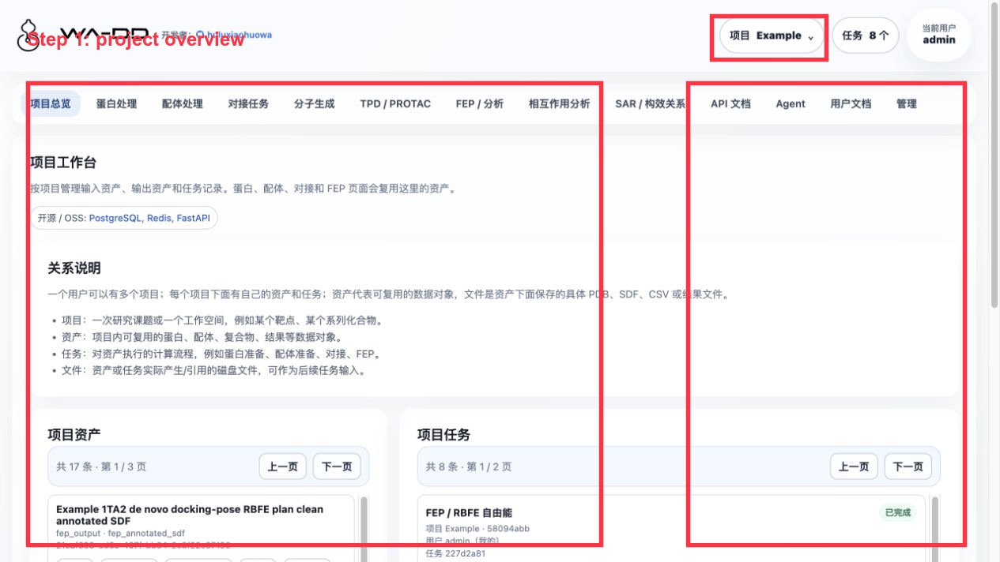
You should see the following key assets:
Example 1TA2 thrombin complexExample 1TA2 reference ligand 176Example 1TA2 176 binding pocketExample 1TA2 receptor prepared ligand-removedExample 1TA2 congeneric 72 analog library prepared for dockingExample 1TA2 PocketXMol de novo generated ligands- Two Uni-Dock docked pose libraries
- Two FEP results and two FEP outputs
2. Download the protein from PDB and extract the reference ligand/pocket
Go to Protein Processing and download 1TA2 from PDB. Find 176 A:401 in the component list.

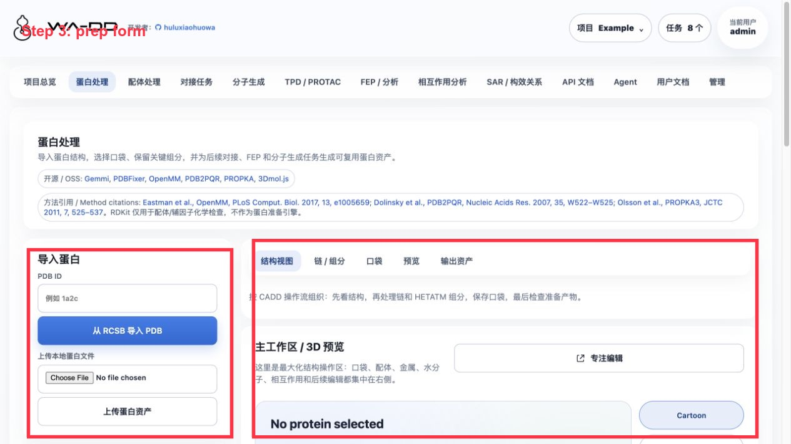


Operations:
- Extract
176 A:401as a ligand asset:Example 1TA2 reference ligand 176. - Extract a pocket asset at the
176 A:401position:Example 1TA2 176 binding pocket. - Run protein preparation; the output is
Example 1TA2 receptor prepared ligand-removed.
During protein preparation, the reference ligand must be removed; otherwise the pocket is still occupied by the co-crystal ligand during subsequent docking.
3. Prepare the congeneric ligand library
Go to Ligand Processing, select the congeneric library, and generate the prepared ligand asset.
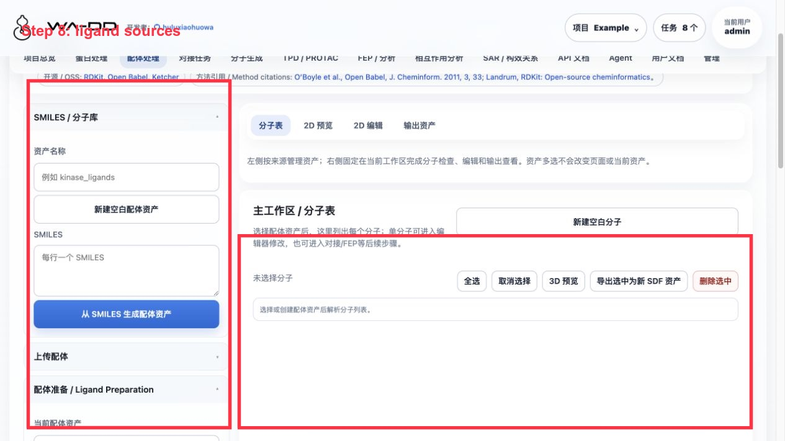
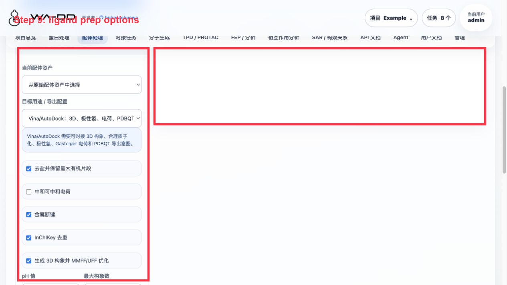
Congeneric library in this example:
- Raw library:
Example 1TA2 ligand 176 congeneric 72 analog library - Prepared library:
Example 1TA2 congeneric 72 analog library prepared for docking
Recommended preparation parameters:
- Explicit hydrogen addition
- Generate 3D conformers
- pH 7.4
- MMFF/UFF optimization
- Compute chemical properties and write them into SDF properties
4. Run Uni-Dock docking on the congeneric library
Go to Docking Tasks and select the prepared protein, the prepared congeneric library, and the 176 pocket.
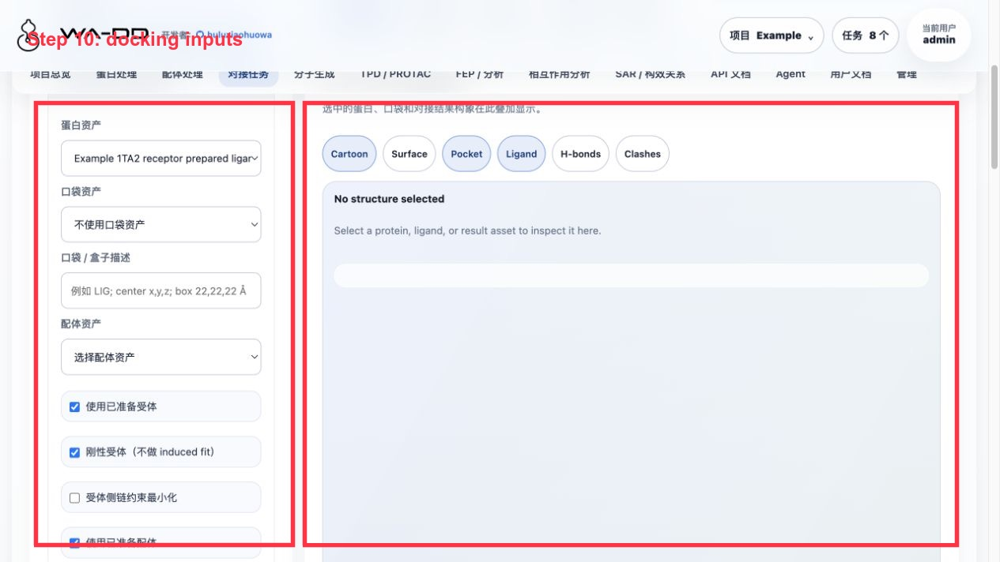
Parameters for this example:
- engine: Uni-Dock
- scoring: Vina
pose_per_ligand=3keep_top_poses=1cpu_threads=4- GPU:
cuda:0
Validation results for this run:
- Input ligands: 66
- Output poses: 194
- Failed/skipped: 0
- Output pose library:
Example 1TA2 congeneric Uni-Dock screening result docked pose library
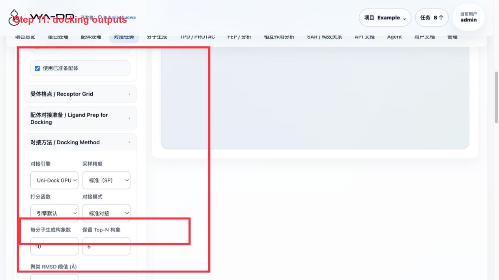
Click View Report · 194 poses to see the score table; click Analyze Pose Library · 194 poses to enter interaction analysis.
5. Run PocketXMol de novo generation in the same pocket
Go to Molecule Generation and select the same prepared protein and the same pocket.
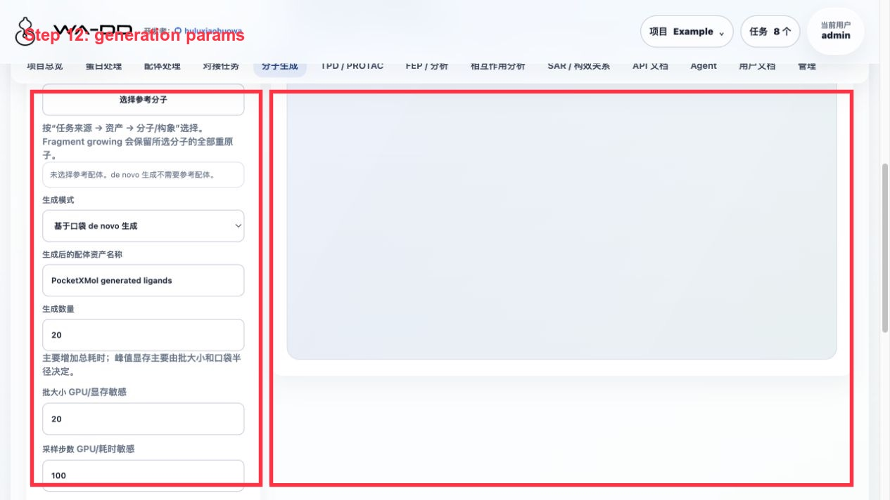
Parameters for this example:
- Mode: pocket-based de novo generation
- Number to generate: 24
- batch size: 8
- mean atoms: 28
- min atoms: 10
- sampling steps: 100
- pocket radius: 12 Å
- GPU:
cuda:0 prepare_for_docking=true
Validation results for this run:
- 24 requested, 23 succeeded.
- Output asset:
Example 1TA2 PocketXMol de novo generated ligands - Output SDF:
generated_ligands_h.sdf - The asset has explicit hydrogens; the page shows the
heavy / Hcount for each molecule.
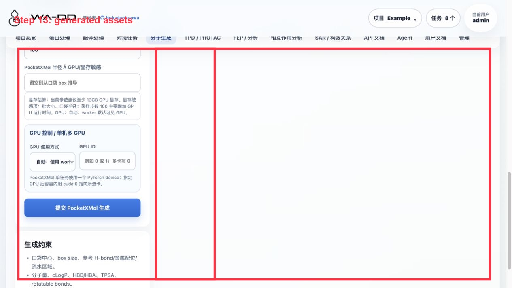
6. Dock the de novo generated ligands
Return to Docking Tasks, with the same prepared protein, the same pocket, and Example 1TA2 PocketXMol de novo generated ligands as inputs.
Validation results for this run:
- Input ligands: 23
- Output poses: 69
- Failed/skipped: 0
- Output pose library:
Example 1TA2 PocketXMol de novo Uni-Dock result docked pose library
7. Run an FEP/RBFE dry-run on both docking result sets
Go to FEP / Analysis and create an RBFE task for each of the two docked pose libraries.
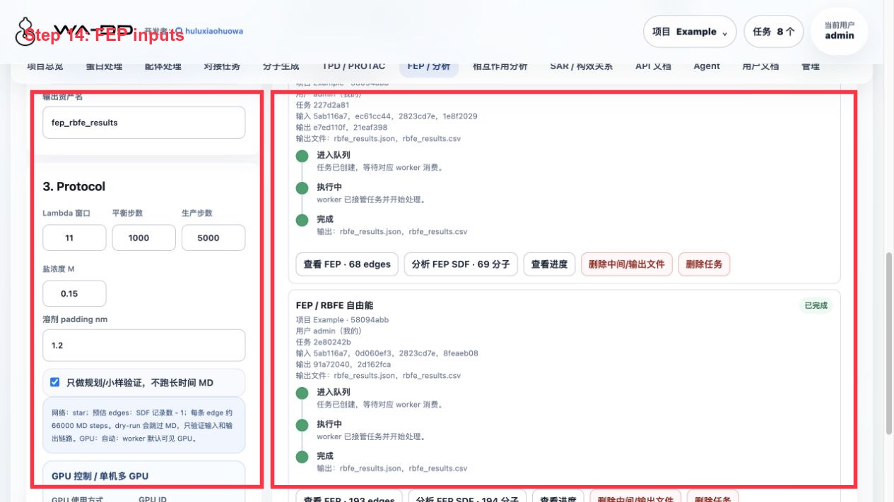
This example is a dry-run, used to check the ligand map and result presentation, and does not represent real ΔΔG.
Output:
- Congeneric library: 193 planned edges, derived SDF
Example 1TA2 congeneric docking-pose RBFE plan clean annotated SDF, 194 records. - de novo library: 68 planned edges, derived SDF
Example 1TA2 de novo docking-pose RBFE plan clean annotated SDF, 69 records.
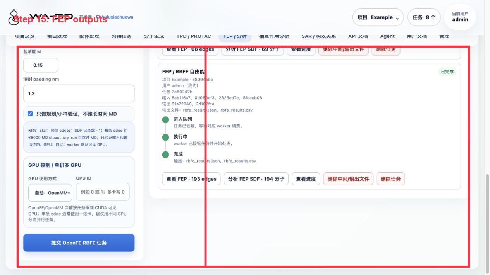
Click View FEP · N edges to see the edge table; click Analyze FEP SDF · N molecules to send the SDF with FEP fields into interaction analysis.
8. Interaction analysis and result interpretation
Go to Interaction Analysis and select Example 1TA2 receptor prepared ligand-removed as the receptor. On the left, expand FEP output, docking poses, molecule generation, and prepared ligands by source.

Operations:
- Expand a source group.
- Click
Best 1,Top 5, or check specific molecules one by one. - View the receptor, ligand, and interaction force dashed lines in the 3D area.
- View docking score, FEP fields, number of interaction forces, and contacting residues on the right.
- Use the export button to save the table, SDF, or generate a new asset from the selected molecules.

Independent window:

Note: Before clicking Open Independent Analysis Window, you must select at least one molecule/pose; otherwise the page will prompt you to select a conformation first.

Result interpretation:
- A more negative docking score is generally better, but it cannot be directly equated to experimental free energy.
- Edges from an FEP dry-run are only planning results; a formal FEP run produces real ΔΔG, uncertainty, and trajectories.
- The interaction dashed lines are currently distance-based geometric candidates, suitable for fast screening and locating residues; before publication, they should still be verified with a formal profiler or experimental structure.
9. 2D/3D asset viewing
The Ligand Processing page can directly open any ligand SDF, docking pose library, or fep_output.
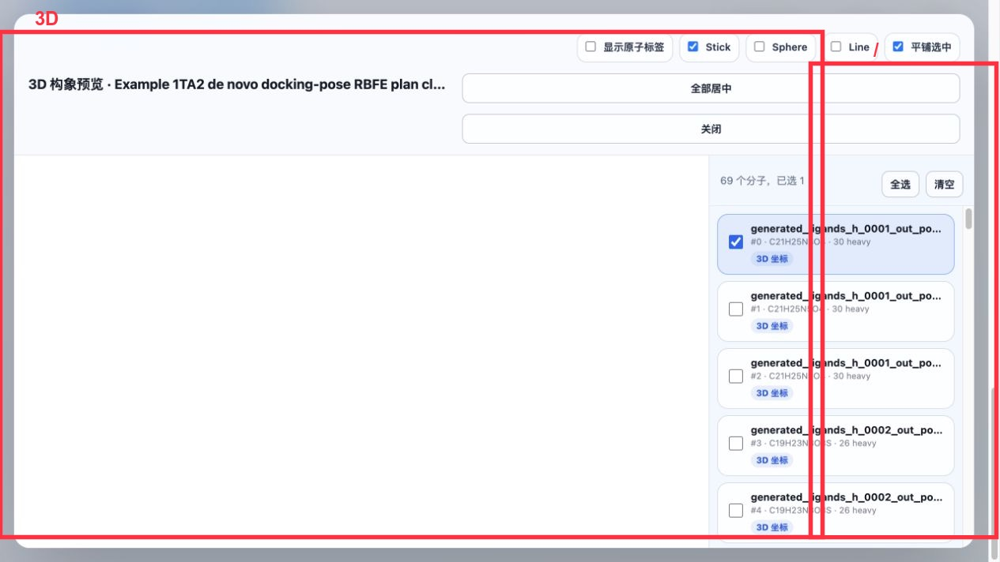
Usage suggestions:
- The 2D view is suitable for sorting, filtering, paging, and exporting by properties.
- The 3D view is suitable for confirming whether a conformation is reasonable, whether explicit hydrogens are present, and whether multiple conformations overlap in reasonable positions.
- On the asset card, prioritize the asset name, source category, and molecule count; there is no need to memorize raw IDs.
10. User documentation page
The User Documentation item in the menu will display the HTML converted from userguide/*.md at build time.
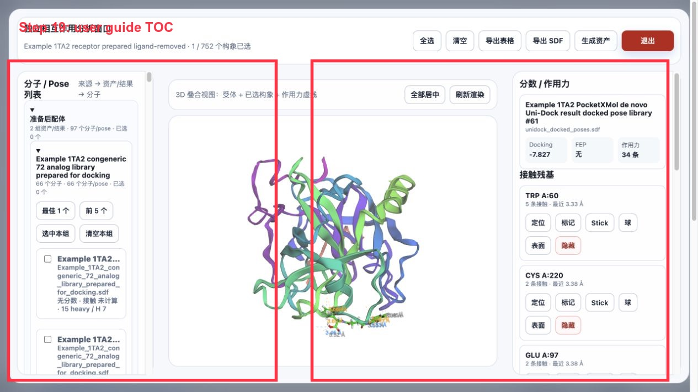
Each time the web image is built, the documentation and images are re-converted; after updating the documentation, the web image must be rebuilt and deployed before the online page can show the new content.